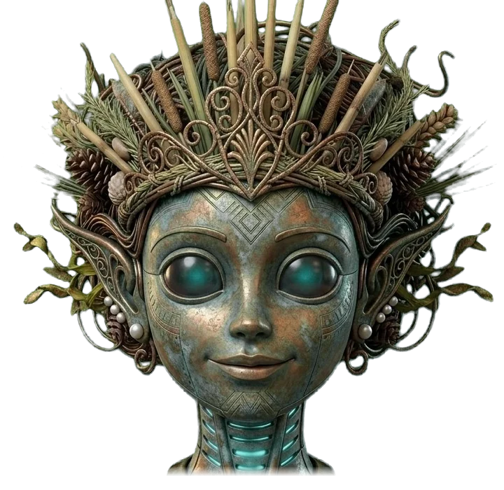
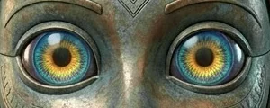

Her parts from the renders, layered: the tail loops under the ledge, her irises glance, and her mouth swaps between her own shapes. Not on the site yet.


Still to come: her eyes closed (for blinks). "mm" uses her neutral mouth for now.